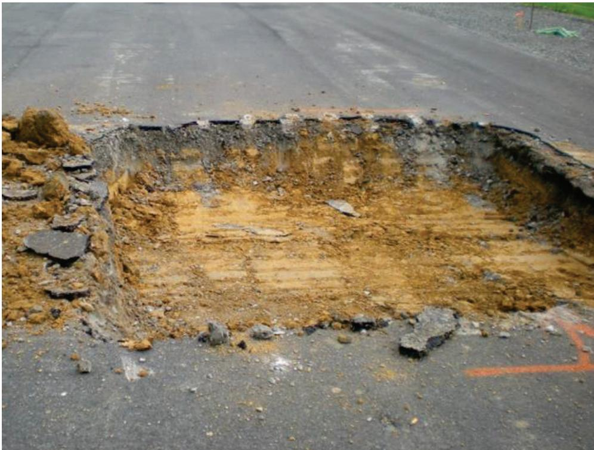
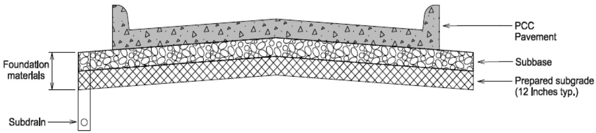
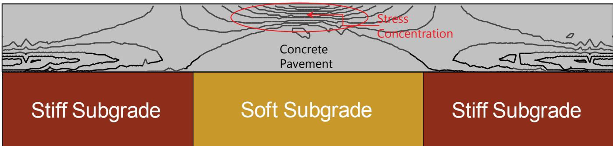
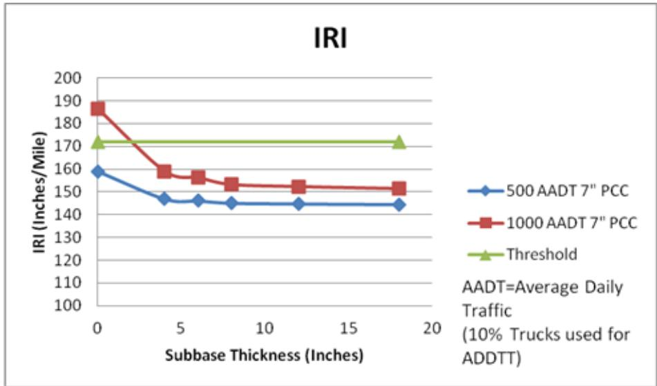
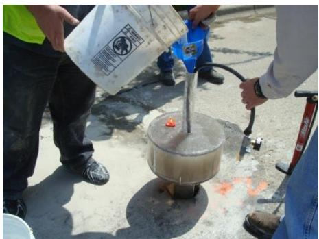
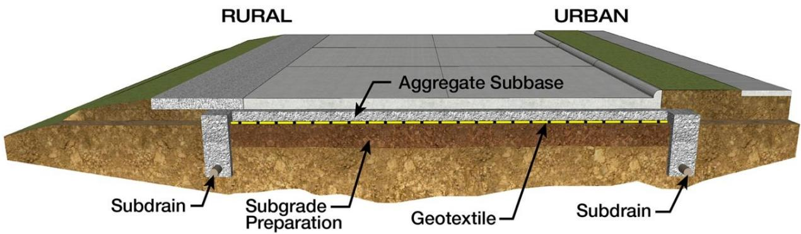
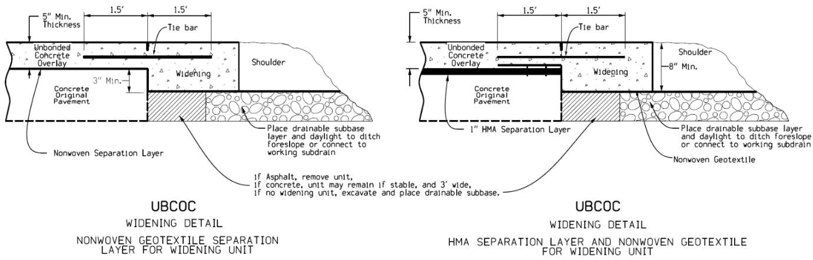
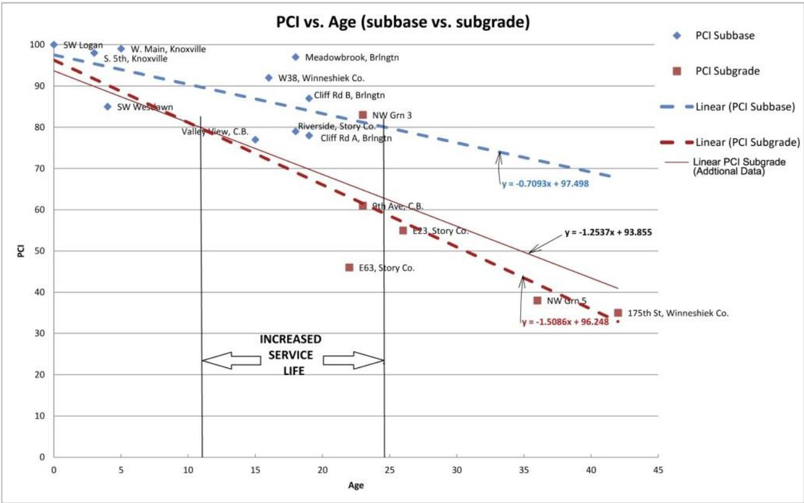

Aggregate Subbase Performance
Aggregate subbase performance refers to the ability of a well‑graded granular layer placed between a natural subgrade and either rigid or flexible pavement to provide a uniform, stiff foundation that mitigates the deficiencies of weak, variable, poorly drained soils [1][5][6][7][8]. By spreading traffic loads over a larger area, reducing stresses on the underlying soil, and acting as a capillary break with high permeability (≈150 ft/day), the subbase limits settlement, frost heave, rutting, surface deflection and moisture‑induced deterioration while also serving as a stable construction platform [1][5][7]. Its performance is governed by specific material limits—maximum particle size no more than one‑third of the layer thickness (typically ≤ ¾–1 in), fines passing #200 sieve < 15 %, plasticity index ≤ 6, Los Angeles abrasion loss ≤ 50 %, and compaction to at least 100 % of ASTM D698/AASHTO T99 density (105 % for heavy traffic) [5][7][8]. When these criteria are met, the aggregate subbase delivers superior drainage, erosion resistance, and long‑term durability that translate into smoother rides, lower IRI/PCI values and extended service life for both concrete and asphalt pavements [1][5][6][7].
Sources (10)
Purpose and design objectives
The engineering problem that aggregate subbase performance is meant to solve is the insufficient and uneven support offered by natural subgrade soils, which are often weak, variable, poorly drained, or prone to freeze‑thaw and moisture‑induced movement. This condition leads to excessive settlement, frost heave, cracking, roughness, rutting, surface deflection, and accelerated deterioration of both flexible and rigid pavements. By inserting a granular aggregate layer that provides “providing a stable, stiff foundation” and acts as a “stable working platform that can reduce construction delays,” the design creates a uniform, strong base that “serve as a construction platform and improve the level of stability and uniformity for the pavement foundation.” The aggregate subbase “spreads traffic loads over a larger area,” thereby “Reduce stresses on the subgrade” and “Reduce rutting and deflections in a flexible pavement surface.” In addition, its high permeability ensures “drainage of these layers is outstanding” and “improve the drainage under the pavement, minimizing the deterioration caused by water entrapment,” delivering a “uniform, drainable, and stable support system” that prevents settlement‑related cracking in concrete slabs. Overall, the design addresses the need for uniform bearing capacity, effective load distribution, and long‑term durability of the pavement structure. [1][5][6][7][8]
The following figure illustrates why subgrade and subbase failures must be repaired to achieve uniform support.

Excavated pavement section revealing subgrade and subbase failure. [8]The image displays a rectangular excavation in an asphalt road surface, exposing the underlying soil layers where the pavement structure has been removed or failed. The caption notes that such failures must be repaired to achieve uniform support, highlighting the necessity of a stable foundation layer.
[1] — Ch. 3 (pp. 18–19); [5] — Aggregate Subbase Thickness (pp. 31–32), Benefits of Aggregate Subbase … (p. 30), INTRODUCTION (p. 8), SUMMARY (pp. 39–42), Subgrade Soil Key Factors (p. 9), Unstabilized Aggregate Subbases (pp. 12–13); [6] — Objectives (p. 62); [7] — Ch. 4 (pp. 149–302); [8] — 2. Factors Influencing Long-Li… (p. 32), 4. Pre-Paving (p. 41)
The aggregate subbase must satisfy multiple objectives. Functionally it provides a uniform support layer and, where required, drainage to create a stable working platform for construction and service: “Provides a construction platform”, “The subgrade and subbase system should provide uniform support and drainage (where required) for the PCCP and serve as a working platform for placing the PCCP”, “stable working platform that can reduce construction delays”, “A granular support layer will also serve as a drainage system to help drain surface water away from the pavement as well as provide a cutoff layer from subsurface moisture”, and “drainage of these layers is outstanding”. Structurally it must deliver high stiffness and strength, distribute traffic loads evenly and limit settlement or rutting: “high subgrade stiffness and strength value”, “Nonuniformity can lead to stress concentrations in the PCCP, which may lead to premature failure.”, “Reduce stresses on the subgrade.”, “Reduce rutting and deflections in a flexible pavement surface.”. Durability is achieved by controlling gradation, fines content, abrasion loss and compaction density, and by resisting erosion and clogging: “Maximum particle size of no more than one third the subbase thickness”, “the maximum size of material is usually limited to 1” and preferably to ¾”.”, “Limit the amount of fines passing a 75‑μm (#200) sieve.”, “Aggregates having less than 50 percent loss in the Los Angeles abrasion test (ASTM C 131 / AASHTO T 96) are satisfactory.”, “Minimum of 100 percent of ASTM D 698 / AASHTO T 99 density. For projects that will carry large volumes of heavy traffic, the specified density should not be less than 105 percent of standard density or 98 to 100 percent of ASTM D 1557 / AASHTO T 180 density.”, “stabilized subbases are more resistant to erosion and loss of support than granular materials”. Safety is provided by rapid removal of surface water, isolation from subsurface moisture, and control of shrink‑swell, frost heave and mud‑pumping: “Safety is provided by rapid removal of surface water, isolation from subsurface moisture, control of shrink‑swell behavior, frost heave, mud‑pumping, and acting as a capillary break.” Serviceability objectives include producing the smoothest pavement surface, limiting cracking and IRI, and maintaining acceptable curl/warp for concrete slabs: “these subbase systems can produce the smoothest pavements”, “significant reduction in failure modes for cracking and IRI when aggregate subbase is used”, “provide erosion‑resistant and uniform support, a good construction platform and acceptable levels of curl/warp and frictional stresses”, “All concrete pavements should be constructed on a uniform, drainable, and stable support system.” [1][5][6][7][8]
The following figure illustrates the arrangement of subgrade, subbase, and pavement layers.

Illustration of Subgrade, Subbase and Pavement Layers [8]The figure depicts a cross-section of a pavement structure consisting of PCC Pavement overlying a granular subbase layer. This assembly rests on prepared subgrade and includes a subdrain, illustrating the system designed to provide uniform support and drainage for the pavement.
[1] — Ch. 3 (pp. 18–19); [5] — Aggregate Subbase Thickness (pp. 31–32), Benefits of Aggregate Subbase … (p. 30), SUMMARY (pp. 39–42), Unstabilized Aggregate Subbases (pp. 12–13); [6] — Objectives (p. 62); [7] — Ch. 4 (pp. 149–302); [8] — 2. Factors Influencing Long-Li… (p. 32), 4. Pre-Paving (p. 41)
Scope and applicability
“Aggregate subbase performance” is appropriate for a wide range of pavement types and project situations. The guides state that “Granular aggregate subbase is appropriate for concrete pavements that carry high traffic volumes, such as major roadways and airport runways” and that it is used “when a stable working platform and excellent drainage are required.” It is also noted as “the preferred choice when the subbase must serve as a drainage layer in addition to supporting loads,” and that “Projects that demand long‑term performance or are located in areas with shallow water tables benefit from using thicker granular base layers to reduce clogging and extend service life.”
Both rigid (Portland cement concrete) and flexible (asphalt) pavements are covered: “Aggregate subbase is appropriate for both rigid (Portland cement concrete) and flexible (asphalt) pavements that are placed directly on natural subgrades where the soil is weak, highly variable, or poorly drained.” When such soils exist, “the aggregate layer provides a stable, uniformly supportive construction platform and acts as a drainage/capillary cut‑off,” and “An aggregate subbase can also improve the drainage under the pavement, minimizing the deterioration caused by water entrapment.”
For low‑volume roads, the guidance notes that “a minimum of about five inches of well‑graded granular material combined with a geotextile separator yields measurable reliability gains” and that “Thicker sections are generally unnecessary for such traffic levels, although asphalt pavements may require greater thickness because they transfer approximately 20 psi to the subbase versus less than 5 psi for concrete.” Materials must satisfy “AASHTO M147 requirements (maximum particle size ≤ one‑third of the subbase thickness, <15 % passing #200 sieve, plasticity index ≤6, liquid limit ≤25, Los Angeles abrasion ≤50 %, and permeability around 150 ft/day).”
The approach is also suited to rehabilitation: “Aggregate subbase performance is suited to rehabilitation projects on flexible pavements where an existing failed asphalt surface and base can be reclaimed,” providing a “strong, uniform base/sub‑base for current and future loading conditions using existing failed asphalt surface and base material,” while “maintaining existing grade with minimum material removal or addition” and “reducing stresses on the subgrade” as well as “reducing rutting and deflections in a flexible pavement surface.”
For concrete pavements vulnerable to settlement, it is stated that “Aggregate subbase design is appropriate for concrete pavements that are susceptible to settlement or support problems, especially where erosion resistance, uniform bearing capacity, and a stable construction platform are needed.” It is also “suitable for low‑volume roads or any project with a nonuniform natural subgrade that can be stabilized by a granular layer, particularly when moisture‑related settlement and heave must be mitigated.” Both stabilized and unstabilized options are allowed: “Both stabilized and unstabilized (granular) aggregate bases may be used; the former provides greater erosion protection but higher stiffness that can increase curling or warping stresses, while the latter offers lower stiffness at the expense of less erosion resistance.”
Long‑life concrete slabs benefit as well: “Aggregate subbase design is appropriate for Portland‑cement concrete pavements—particularly long‑life concrete slabs—that require a supporting layer between the prepared subgrade and the slab to provide uniform support, load distribution, and, when needed, drainage.” The method can employ “granular subbases of compacted crushed aggregate or gravel, cement‑ or bitumen‑stabilized aggregates, or drainable configurations that combine unbound aggregates with cement or bituminous binders,” and is “especially suited to projects where the native subgrade alone cannot guarantee even stress transfer or moisture control and where heavy traffic volumes demand higher compaction densities.” Material limits are given as “fines are limited to what passes a 75 µm (#200) sieve, Los Angeles abrasion loss must be less than 50 %, maximum particle size is generally capped at one inch (preferably three‑quarters of an inch), and compaction density must reach at least the standard specified by ASTM D698/AASHTO T99, with heavy‑traffic sections targeted to 105 % of that value or 98–100 % of ASTM D1557/AASHTO T180.” [1][5][6][7][8]
[1] — Ch. 3 (pp. 18–19); [5] — Aggregate Subbase Thickness (pp. 31–32), Benefits of Aggregate Subbase … (p. 30), INTRODUCTION (p. 8), SUMMARY (pp. 39–42), Subgrade Soil Key Factors (p. 9), Unstabilized Aggregate Subbases (pp. 12–13); [6] — Objectives (p. 62); [7] — Ch. 4 (pp. 149–302); [8] — 2. Factors Influencing Long-Li… (p. 32), 4. Pre-Paving (p. 41)
Across the guides, several conditions are identified where an aggregate subbase is not the preferred solution. When project budgets are constrained, “Unfortunately, this subbase is the most expensive,” making cheaper alternatives more attractive, especially if drainage functions can be satisfied by other means. The guides note that many pavements are successfully built on a natural subgrade without any stabilized layer: “It is common for local street and highway pavements to be constructed from PCC supported on a natural subgrade without considering or using a subgrade stabilized treatment or support layer such as an aggregate subbase.” In low‑volume traffic contexts, adding more than about five inches of granular material provides little structural gain; indeed, “aggregate subbase thickness above 5 inches, do not show a significant benefit over thicker sections.” Soil characteristics also drive the decision. Soils with high moisture, pronounced expansive or shrink‑swell behavior, or low dry density (under roughly 95 lb/ft³) undermine the performance of an unstabilized granular layer: “Those soils that have high moisture content or high expansive/shrinkage characteristics with low density (less than 95 pounds per cubic feet) will typically require either additional soil modification and/or a stabilized base.” In such cases, designers are urged to consider alternatives—direct pavement on a uniform, drainable subgrade, thin aggregate layers combined with geotextile separators, or fully stabilized bases—to achieve the required durability and serviceability. [1][5][7]
The following figure illustrates how to prevent fines from entering a granular unstabilized subbase.
 Comparison of pavement performance with and without geotextile stabilization. [7]
Comparison of pavement performance with and without geotextile stabilization. [7]
The figure illustrates the concept of separation by contrasting a stable pavement structure on the left with a distressed one on the right. In the unstabilized scenario, migration of subgrade fines into the aggregate layer creates a weakened transition zone that compromises the structural integrity of the pavement. The inclusion of a geotextile layer prevents this contamination, maintaining an effective aggregate base that provides a uniform foundation.
[1] — Ch. 3 (pp. 18–19); [5] — Aggregate Subbase Thickness (pp. 31–32), INTRODUCTION (p. 8), SUMMARY (pp. 39–42), Subgrade Soil Key Factors (p. 9), Unstabilized Aggregate Subbases (pp. 12–13); [7] — Ch. 4 (pp. 149–302)
Design inputs and requirements
Design of an aggregate subbase must be based on site‑specific data that capture the subgrade’s stiffness and drainage, the material strengths, traffic loading, environmental moisture conditions, geotechnical profile, and any existing pavement or soil conditions. Required inputs include the in‑situ modulus of subgrade reaction (k) and drainage coefficient (Cd), the California Bearing Ratio (CBR) values for both natural subgrade and aggregate subbase, identification of any weak subgrade layer (e.g., low‑CBR zones), traffic volume and truck percentage, planned pavement thickness, age or service life considerations, and information on current soil moisture or drainage characteristics. These parameters together define the geotechnical and existing‑condition context needed to predict performance and select appropriate aggregate subbase thickness and design. [5]
[5] — SUMMARY (pp. 39–42)
The design of unstabilized aggregate subbases must comply with the AASHTO M147 material requirements and state DOT specifications for modified, granular, and special backfill. Across the guides the design is governed by the Mechanistic‑Empirical Pavement Design Guide (MEPDG), which “according to MEPDG an increase over 5 inches of aggregate subbase does not provide any additional structural support for local roads with 1000 ADT and10 percent trucks”; consequently thickness calculations target a design life of 30–40 years and aim for CBR values near the nominal 100 for new material.
Performance requirements are consistent among the sources: “Maximum particle size of no more than one third the subbase thickness” and “The maximum particle size should be no more than one‑third of the base thickness”; the nominal maximum size is generally limited to one inch, with a preferred limit of three‑quarters inch (“the maximum size of material is usually limited to 1” and preferably to ¾”). Fines are restricted by multiple statements – “Less than 15 percent passing through the number 200 sieve”, “less than 10 percent passing the No. 200 sieve”, and “Limit the amount of fines passing a 75‑μm (#200) sieve.” The plasticity index must be low: “Plasticity index of 6 or less” (also repeated in “maximum relative density of 70 percent, plastic index of 6 or less, and liquid limit of 25 or less”). Liquid limits shall not exceed twenty‑five. Compaction requirements state a “Minimum of 100 percent of ASTM D 698 / AASHTO T 99 density”; for heavy‑traffic projects the compacted density may not be lower than 105 % of that standard or must fall between 98 % and 100 % of the density defined by ASTM D1557/AASHTO T180. Abrasion resistance is limited to “Aggregates having less than 50 percent loss in the Los Angeles abrasion test (ASTM C 131 / AASHTO T 96) are satisfactory.” Drainage performance is set by “Target permeability of about 150 ft/day, but no more than 350 ft/day in laboratory tests” and reinforced by “A target permeability should be about 150 feet per day.” Expected drainage coefficients are around 0.9 (as noted in the increase from 0.8 to 0.9 for aggregate subbase).
Project constraints emphasize functional and constructability goals: “Provide a strong, uniform base/subbase for current and future loading conditions”, “Maintain existing grade with minimum material removal or addition.”, “Reduce stresses on the subgrade.”, and “Reduce rutting and deflections in a flexible pavement surface.” Rapid reconstruction methods that cause little traffic disruption and meet sustainability objectives are required. A geotextile interlayer (or equivalent capillary break) is specified for low‑volume roads: “For low volume roads, the design reliability has a measurable increase with a aggregate subbase of only 5 inches and a geotextile interlayer as compared to a natural subgrade.” [5][6][7][8]
[5] — SUMMARY (pp. 39–42), Unstabilized Aggregate Subbases (pp. 12–13); [6] — Objectives (p. 62); [7] — Ch. 4 (pp. 301–302); [8] — 2. Factors Influencing Long-Li… (p. 32)
Design methods and criteria
Aggregate subbase design follows AASHTO M147 material specifications and a set of empirical criteria that govern particle size, gradation, density, plasticity, liquid limit, abrasion resistance, and permeability. The guides require the maximum aggregate particle size to be no more than one‑third of the intended subbase thickness. Fines content is limited to less than 15 % passing a #200 sieve in one source, while another source specifies less than 10 % passing the No. 200 sieve. A relative density of at least 70 % is required by one guide. Plasticity index must not exceed 6 and liquid limit must be ≤25 %; Los Angeles abrasion loss is limited to 50 %. Target permeability is about 150 ft/day (laboratory ceiling 350 ft/day). Gradation is selected to provide sufficient fines for stability rather than maximum drainage, and capillary breaks such as geotextile filters or dense‑graded aggregate layers, often combined with subdrain systems, are incorporated to maintain high drainage coefficients.
Design procedures employ the Pavement ME Design tool in AASHTOWare, which implements the Mechanistic‑Empirical Pavement Design Guide (MEPDG) to simulate cracking and International Roughness Index responses for varying traffic loads and subbase thicknesses. The mechanistic‑empirical analysis indicates that increasing aggregate subbase thickness beyond roughly five inches does not provide additional structural benefit for typical local roads, so thinner sections are frequently paired with a geotextile interlayer to achieve the required drainage coefficient.
Long‑term performance is forecast using a Pavement Condition Index (PCI) prediction model derived from multivariate regression of field data (16 sites). The empirical formula incorporates pavement age, drainage coefficient, CBR and k values, traffic loading, and layer thicknesses, with drainage having the largest effect on predicted PCI. [5][7]
The following figure illustrates the relationship between pavement condition and age under a traffic volume of 1000 AADT as predicted by this model.
 PCI vs Age 1000 AADT, 7” PCC, Prediction Model [5]
PCI vs Age 1000 AADT, 7” PCC, Prediction Model [5]
The figure plots the Pavement Condition Index (PCI) against pavement age in years for a rigid pavement structure. It compares two distinct scenarios: one representing a pavement on aggregate subbase and another on natural subgrade, demonstrating that the subbase configuration maintains a higher PCI over time. The model indicates that using an improved drainage coefficient with the aggregate subbase results in superior long-term performance compared to the baseline configuration.
[5] — Aggregate Subbase Thickness (pp. 31–32), SUMMARY (pp. 39–42), Unstabilized Aggregate Subbases (pp. 12–13); [7] — Ch. 4 (pp. 301–302)
The design of an aggregate subbase must satisfy a comprehensive set of load‑attenuation, material‑property, thickness, drainage and reliability criteria that together guarantee structural performance, durability and predictable service life. Design assumptions recognize that traffic loads are transmitted to the subbase at markedly different pressures – “a 100 psi tire load typically results in less than 5 psi to the aggregate subbase for concrete pavement” and “approximately 20 psi for the aggregate subbase for asphalt pavement” – so that flexible pavements require proportionally thicker or stronger layers. Material specifications are governed by multiple thresholds: the maximum particle size must not exceed one‑third of the layer thickness (“Maximum particle size of no more than one third the subbase thickness”; “The maximum particle size should be no more than one-third of the base thickness…”), with an upper limit of 1 in (preferably ¾ in) for practical grading; fines are limited to less than 15 % passing #200 sieve (“Less than 15 percent passing through the number 200 sieve”) and also to “Limit the amount of fines passing a 75‑μm (#200) sieve.” The plasticity index shall be ≤6 (“Plasticity index of 6 or less”; “plastic index of 6 or less”), liquid limit ≤25, relative density ≤70 %, and Los Angeles abrasion loss ≤50 % (“Los Angeles abrasion resistance of 50 percent or less”; “Aggregates having less than 50 percent loss in the Los Angeles abrasion test (ASTM C 131 / AASHTO T 96) are satisfactory”).
Thickness criteria reflect diminishing returns beyond a modest depth: “aggregate subbase thickness above 5 inches, do not show a significant benefit over thicker sections,” yet for soils prone to migration a “placing a thicker layer of aggregate subbase (8 to 9 inches for example); this additional thickness allows for the migration of soil into the aggregate subbase.” When a layer thinner than 6 inches is used, a separation must be provided – “place a layer less than 6 inches and provide separation between the aggregate subbase and subgrade in the form of a geotextile” – which also yields measurable reliability gains. For low‑volume roads, “the design reliability has a measurable increase with an aggregate subbase of only 5 inches and a geotextile interlayer as compared to a natural subgrade,” delivering “an increase of 15 to 31percent … for the 40 year pavement thickness design and an increase of 8 to 23 percent … for a 30 year pavement design life.”
Drainage performance is required to prevent moisture saturation of the underlying subgrade: a target permeability of about 150 ft/day (“A target permeability should be about 150 feet per day”) and an improvement in the coefficient of drainage from 0.8 to 0.9 are stipulated, while fine‑soil subgrades demand a capillary break – “a capillary break or cutoff should be placed between the aggregate base and subgrade.”
Functional performance goals include providing “a strong, uniform base/subbase for current and future loading conditions,” maintaining existing roadway grade with minimal cut/fill, “reducing stresses on the subgrade,” and “reducing rutting and deflections in a flexible pavement surface.” The subgrade‑subbase system must also “provide uniform support and drainage (where required) for the PCCP,” serve as a stable working platform during concrete placement, and avoid non‑uniformity because “Nonuniformity can lead to stress concentrations … which may lead to premature failure.” Together these criteria, thresholds, safety margins and reliability requirements define the design envelope that an aggregate subbase must satisfy. [5][6][7][8]
The following figure illustrates how non-uniform subgrade conditions can lead to stress concentrations within the concrete pavement.

Non-uniform Subgrade Leads to Stress Concentrations in the Concrete Pavement [8]The figure depicts a cross-section of a concrete pavement resting on a subgrade composed of alternating stiff and soft soil layers. A red oval highlights the interface above the central soft layer, indicating where stress concentrations occur within the rigid slab due to differential support. This visualizes how nonuniformity in the subgrade can lead to stress concentrations in the PCCP, which may lead to premature failure.
[5] — Aggregate Subbase Thickness (pp. 31–32), SUMMARY (pp. 39–42), Subgrade Soil Key Factors (p. 9), Unstabilized Aggregate Subbases (pp. 12–13); [6] — Objectives (p. 62); [7] — Ch. 4 (pp. 301–302); [8] — 2. Factors Influencing Long-Li… (p. 32), 4. Pre-Paving (p. 41)
Structural section and dimensions
The guides together state that dimensional guidance is limited to the subbase and related aggregate layers; no explicit thicknesses are prescribed for the pavement surface, base course, treated‑soil, slab, shoulder, edge‑support, or reinforcement layers. For low‑volume roads a subbase thickness of about five inches is sufficient, and adding more than five inches does not improve structural capacity. Current practice often places an eight‑to‑nine inch layer to accommodate soil migration, while a thinner layer of less than six inches may be used when a geotextile provides separation from the subgrade. The largest aggregate particles must not exceed one‑third of the planned subbase thickness, and the same one‑third rule applies to unstabilized aggregate bases. When macadam stone is employed, a supplemental aggregate choke layer about 1 to 1½ inches thick is commonly added on top. Additionally, the moisture‑sensitive zone should be kept at least two to three feet below the pavement surface, and a capillary break or cutoff can be provided with a dense‑graded aggregate layer about four inches thick. [5][7]
The following figure illustrates a typical IRI failure mode identified through Pavement ME Design.

IRI failure mode from Pavement ME Design [5]The figure plots the International Roughness Index (IRI) against varying aggregate subbase thicknesses for two different traffic volumes. It demonstrates that increasing the subbase layer reduces IRI values, confirming that a well-graded granular layer provides a uniform foundation that mitigates surface deterioration. The analysis indicates that for low traffic roadways, PCC pavement systems with aggregate subbase thickness above 5 inches do not show a significant benefit over thicker sections.
[5] — Aggregate Subbase Thickness (pp. 31–32), SUMMARY (pp. 39–42), Unstabilized Aggregate Subbases (pp. 12–13); [7] — Ch. 4 (pp. 301–302)
Materials and mixture design
The guides require the aggregate‑subbase specification to identify the subbase class (granular, stabilized, or drainable) and then prescribe material limits, gradation, durability, permeability, and compaction criteria. All sources state that the largest particle must be limited relative to thickness: “Maximum particle size of no more than one third the subbase thickness” and “The maximum particle size should be no more than one‑third of the base thickness, less than 10 percent passing the No. 200 sieve”. Fines are also limited; one source requires “Less than 15 percent passing through the number 200 sieve”, another limits “Limit the amount of fines passing a 75‑μm (#200) sieve.”, and a third caps fines at “less than 10 percent passing the No. 200 sieve”. The fine fraction must be low‑plasticity: “Plasticity index of 6 or less” and “plastic index must be six or less and the liquid limit twenty‑five or less”. Durability is controlled by abrasion resistance, with “Los Angeles abrasion loss of fifty percent or less” and “Aggregates having less than 50 percent loss in the Los Angeles abrasion test (ASTM C 131 / AASHTO T 96) are satisfactory”. Permeability requirements converge on about 150 ft/day: “permeability near one‑hundred‑fifty feet per day but never above three‑hundred‑fifty feet per day in laboratory testing” and “A target permeability should be about 150 feet per day.” For unstabilized granular layers the in‑place density is limited to “maximum relative density of 70 percent”. When subgrade contains silts or clays a capillary break is required: “The capillary cutoff can consist of a filter layer such as a geotextile woven fabric or a 4‑inch plus or minus dense‑graded aggregate layer.” Compaction criteria are set by standard dry density tests: “Minimum of 100 percent of ASTM D 698 / AASHTO T 99 density. For projects that will carry large volumes of heavy traffic, the specified density should not be less than 105 percent of standard density or 98 to 100 percent of ASTM D 1557 / AASHTO T 180 density.” Acceptable materials include “Granular – compacted crushed aggregate or gravel” and may incorporate up to 50 % reclaimed asphalt pavement, with crushed stone, gravels, or recycled pavement material that satisfy IM210 requirements. Maximum particle size is also limited by absolute dimension: “the maximum size of material is usually limited to 1” and preferably to ¾”.” [5][7][8]
[5] — Unstabilized Aggregate Subbases (pp. 12–13); [7] — Ch. 4 (pp. 301–302); [8] — 2. Factors Influencing Long-Li… (p. 32), 4. Pre-Paving (p. 41)
Materials for an aggregate subbase are selected by controlling particle size, fines content, durability indices, and compaction level so that the blend meets established performance limits. The largest aggregate shall not exceed one‑third of the planned subbase thickness, with typical maximum sizes limited to 1 in (preferably ¾ in). Fines are restricted to a small proportion; less than 15 % (or, in some specifications, less than 10 %) may pass the #200 sieve, ensuring construction stability while preserving drainage. Acceptable aggregates must exhibit low plasticity (plasticity index ≤6) and low liquid limit (≤25), and durability is verified by a Los Angeles abrasion loss not greater than 50 %. The resulting gradation should provide a permeability near 150 ft/day (not exceeding about 350 ft/day in laboratory tests) to promote rapid drainage and protect long‑term uniform support. Compaction requirements call for achieving at least the full standard density defined by ASTM D698/AASHTO T99, with heavy‑traffic designs targeting 105 % of that density or 98–100 % of the density from ASTM D1557/AASHTO T180. When a stabilized subbase is considered, its higher stiffness and superior erosion resistance must be balanced against potential increases in curling, warping, and frictional stresses; designers therefore strike a compromise between structural capacity and adverse stress effects while still meeting the same gradation, durability, permeability, and compaction criteria. [5][7][8]
The following figure illustrates a permeability test used to verify these drainage requirements.

Field permeability test on pavement support layers. [5]The image shows a field permeability test being conducted on the in-situ support layers of a concrete pavement site. A worker pours water from a bucket into a blue funnel inserted into a metal ring, while another person operates a hand pump connected to the apparatus.
[5] — Unstabilized Aggregate Subbases (pp. 12–13); [7] — Ch. 4 (pp. 149–302); [8] — 2. Factors Influencing Long-Li… (p. 32)
Structural details and interfaces
Aggregate subbases do not require special joints, reinforcement, load‑transfer devices, transitions, or connections; instead the key structural provisions are a subdrain with an outlet to provide adequate drainage for Iowa soils and, when macadam stone is used, a 1‑to‑1½ inch aggregate choke layer placed on top to supply stability. If an aggregate subbase is used, a subdrain and outlet will be needed to complete the drainage system. Note that a 1 to 1½ inch aggregate choke layer is often placed on top of the macadam stone to provide stability. In order to maintain a high coefficient of drainage it is important to maintain separation between the soil and aggregate subbase which can be achieved with a geotextile interlayer between the natural subgrade and granular material. [5]
The figure below illustrates a typical cross-section demonstrating how an aggregate subbase is constructed with geotextile separation.

Typical section with aggregate subbase and geotextile separation [5]The figure displays a cross-section of pavement construction for both rural and urban environments, highlighting the placement of an aggregate subbase layer over prepared soil.
[5] — SUMMARY (pp. 39–42), Unstabilized Aggregate Subbases (pp. 12–13)
The interfaces are designed so that “To design the interfaces, ensure the aggregate subbase acts as a stable, uniform platform that isolates the pavement from subsurface moisture and provides drainage;” while protecting the contact with fine‑grained subgrade by installing “Interfaces between the aggregate subbase and underlying fine‑grained subgrade should be protected with a capillary break or cutoff that isolates the subbase from migrating fines; this is typically achieved using a filter layer such as a woven geotextile or a dense‑graded aggregate of about 4 inches ±.” The overall system must be prepared to give “When designing the interface between subgrade, subbase, and the Portland cement concrete pavement, the system must be prepared to give a uniformly supportive and, where needed, well‑drained platform for the concrete slab; any irregularities at these contacts can concentrate stresses in the slab and cause early failure.” Finally, effective water removal is ensured by “To provide an outlet for an aggregate base, a subdrain system should be utilized, preferably on both sides of the roadway” to provide an outlet for water that penetrates through pavement joints. [5][7][8]
The figure below illustrates the drainage outlets for a geotextile or HMA separation layer.

Cross-sectional details of Unbonded Concrete Overlay on Concrete (UBCOC) widening, illustrating drainage outlets for geotextile or HMA separation layers. [7]The figure displays two cross-sections of a pavement widening detail where an unbonded concrete overlay is placed over existing concrete pavement and a granular subbase layer. It specifically illustrates the provision for positive drainage by daylighting the separation layer through the use of nonwoven geotextile outlet to prevent cracking due to stripping.
[5] — Aggregate Subbase Thickness (pp. 31–32), SUMMARY (pp. 39–42), Unstabilized Aggregate Subbases (pp. 12–13); [7] — Ch. 4 (pp. 301–302); [8] — 4. Pre-Paving (p. 41)
Drainage, environment, and accessibility
The guides agree that aggregate subbase performance hinges on providing outstanding drainage through a well‑graded granular material. As one source states, “If designed correctly, the drainage of these layers is outstanding; it has been reported these subbase systems can produce the smoothest pavements.” The subbase must act both as a conduit for surface water and as a moisture cutoff: “A granular support layer will also serve as a drainage system to help drain surface water away from the pavement as well as provide a cutoff layer from subsurface moisture,” and “An aggregate subbase can also improve the drainage under the pavement, minimizing the deterioration caused by water entrapment.” To ensure reliable removal of infiltrating water, the guides require a high permeability target—“A target permeability should be about 150 feet per day” and “Target permeability of about 150 ft/day, but no more than 350 ft/day in laboratory tests”—while recognizing that stability may demand finer gradation: “It is better to design the gradation of the unstabilized aggregate subbase to include more fines for the sake of stability than to omit the fines for the sake of drainage.” In moisture‑sensitive locations or where shallow water tables exist, “Thicker base layers are less likely to clog and should be considered where long-term performance is needed or in regions with water tables near the surface.” Where native soils have poor permeability, a subdrain and outlet are mandated: “If an aggregate subbase is used, a subdrain and outlet will be needed to complete the drainage system due to the poor drainage properties of Iowa soils.” The design also addresses climate‑related effects; the subbase “Controls excessive or differential frost heave” and provides “Provides capillary cut off for high water table,” thereby limiting saturation of the subgrade within two to three feet beneath the pavement: “To help minimize settlement and heaves associated with moisture-related conditions, a major objective of pavement design should seek to prevent saturation or exposure to constant high moisture levels of the subgrade 2 to 3 feet underneath the pavement, including the base.” Finally, “Positive drainage must be provided in these types of situations,” and all concrete pavements should rest on “a uniform, drainable, and stable support system” to avoid water‑trapping conditions that could cause settlement or cracking. [1][5][7]
The following figure illustrates how these drainage measures protect against moisture subgrade conditions.
 Moist subgrade conditions at a pavement edge. [5]
Moist subgrade conditions at a pavement edge. [5]
The image shows the exposed cross-section of a concrete slab resting on an earthen foundation, where the soil appears dark and damp along the vertical face. This visualizes poor pavement with moist subgrade conditions, which can compromise the uniform support platform required for aggregate subbase performance.
[1] — Ch. 3 (pp. 18–19); [5] — Aggregate Subbase Thickness (pp. 31–32), Benefits of Aggregate Subbase … (p. 30), INTRODUCTION (p. 8), SUMMARY (pp. 39–42), Unstabilized Aggregate Subbases (pp. 12–13); [7] — Ch. 4 (pp. 149–302)
The aggregate subbase must be designed to preserve the roadway’s existing vertical alignment, limiting any cuts or fills, while being installed quickly enough to keep traffic flowing and reduce safety hazards associated with lane closures. It also has to deliver a strong, uniform base that can accommodate present and future loads without over‑stressing the subgrade, thereby preventing rutting and deflection that could compromise vehicle stability. Finally, the solution should minimize the use of virgin aggregates, supporting broader sustainability objectives. [6]
[6] — Objectives (p. 62)
Verification and expected performance
The completed aggregate subbase is verified by confirming that the fine content does not exceed the limit for material passing a 75‑μm sieve, that the aggregates meet the Los Angeles abrasion requirement of less than 50 % loss, and that compaction achieves at least the specified density. For projects with heavy traffic the compacted density must be no lower than 105 % of the standard or fall within 98–100 % of the ASTM D1557/AASHTO T180 target, while the maximum particle size should not exceed one inch and preferably three‑quarters inch. [8]
[8] — 2. Factors Influencing Long-Li… (p. 32)
Aggregate subbase performance is expected to manifest as noticeably fewer cracking failures and a smoother ride, reflected by lower International Roughness Index (IRI) values. These outcomes are quantified through mechanistic‑empirical pavement design (MEPDG) analyses that predict cracking failure modes and compute IRI for the designed section. Aggregate subbase systems are expected to deliver a noticeably higher pavement condition index over the design life, extending remaining service life and providing a more reliable level of service. These outcomes are quantified using the PCI prediction model developed from the TR‑640 field data, which relates measured parameters such as drainage coefficient, subgrade reaction modulus, CBR, traffic volume and pavement thickness to observed PCI values over time. The performance benefits are most pronounced when the aggregate subbase is provided at a thickness up to about five inches; thicker layers do not yield additional gains, allowing a relatively thin, well‑drained subbase—potentially with geotextile separation—to achieve the desired distress resistance, ride quality, and sustained PCI throughout the pavement’s design life. [5]
The following figure illustrates the relationship between pavement condition index and age based on data from the IHRB TR-640 test sites.

PCI vs. Age (subbase vs. subgrade) [5]The figure plots the Pavement Condition Index against age for test sites, comparing pavements with an aggregate subbase to those on natural subgrade. Pavements with an aggregate subbase are performing better than those placed on natural subgrade, as indicated by the higher PCI values and shallower decline rate of the blue trend line compared to the red. The graph illustrates that using an aggregate subbase results in a higher level of service and extends the remaining service life compared to relying solely on the underlying soil.
[5] — Aggregate Subbase Thickness (pp. 31–32), SUMMARY (pp. 39–42)